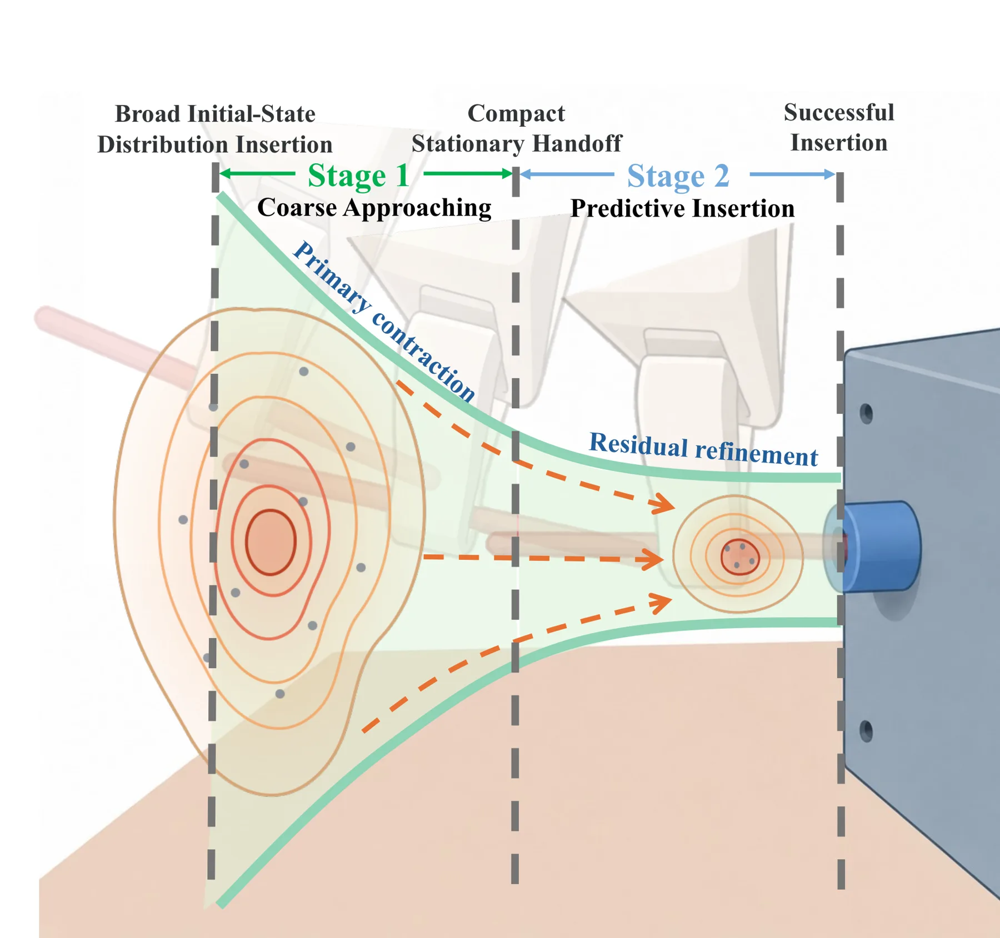
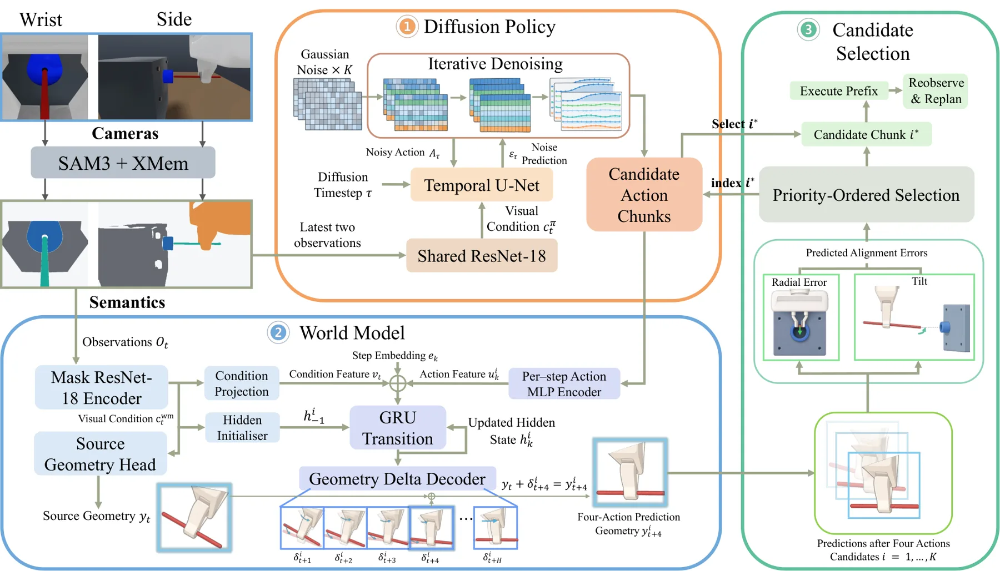
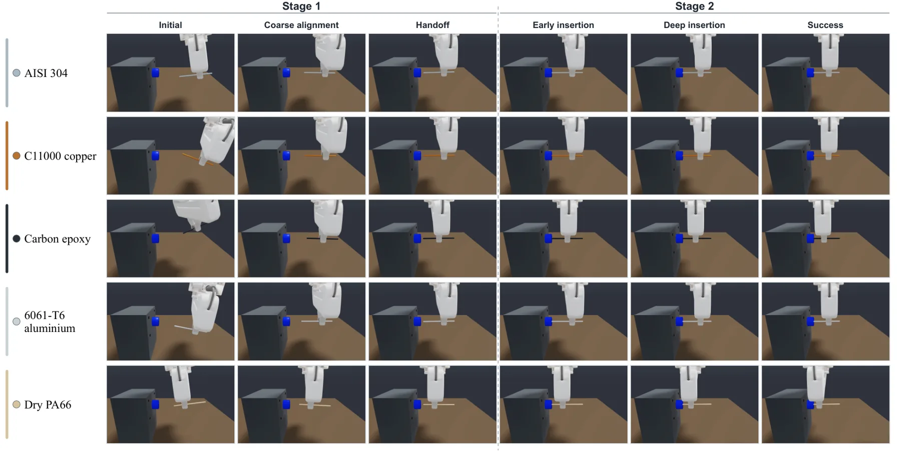

RodForesight：世界模型增强的细长杆插入策略RodForesight: A World Model Enhanced Diffusion Policy for Slender and Material Agnostic Rod Insertion
A 级 robotic foundation/world model，具有明确的动力学先验和闭环动作筛选。
一句话工作总结
该工作把可变形物体的动力学预测接入动作选择，展示了世界模型如何在接触任务中减少执行前试错。
半海报（待补全）
当前记录尚未达到完整海报质量门槛，暂不把摘要或评分理由冒充方法/实验结论。
待补字段：研究上下文.lineage（至少 2 条实质条目）、研究上下文.network（至少 2 条实质条目）。下一次任务需从论文全文或官方 HTML 提取证据后再发布。
摘要
RodForesight 将粗略接近与预测插入分为两阶段，用 Cosserat 杆模型和动作条件世界模型预测候选动作对杆孔对齐的影响，再由 diffusion policy 选择动作块。
Slender rod insertion arises in precision manufacturing, where millimetre scale diameter and tight clearances demand accurate perception and control. Conventional peg-in-hole methods assume a rigid object whose tip pose is fixed relative to the gripper. This assumption breaks down for a high aspect ratio rod, which can bend during manipulation, making its tip motion dependent on the rod configuration, grasp, material properties, and contact. We present RodForesight, a learning framework that factorises the task into two stages: 1) coarse approaching, which uses visual servoing to map diverse initial configurations into a compact near hole hand-off region; and 2) predictive insertion, which performs fine alignment and completes the insertion. It is worth noting that the two stages can be wrapped into an end-to-end design. During insertion, a diffusion policy generates candidate action chunks, while an action conditioned world model predicts their effects on rod-hole alignment. This pre-execution evaluation enables RodForesight to select the best action chunk based on predicted tilt and radial errors before execution. Experiments investigate the performance of different stages and the end-to-end setting, where RodForesight improves the success rate from 88.9% to 96.7%, compared to baseline methods such as diffusion policy.
图表/页面预览

{kind=link}

{kind=link}

{kind=link}
